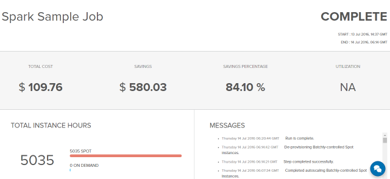

Let's get started with Big Data Apps
Big Data has following apps which are almost similar to each other in term of using it (or information required to run these apps): Hive, Pig, Spark, Hadoop
This demonstration will show on how to use Spark app.You may select any other Big data app instead of Spark.(since , all these apps are similar)
Step 1: Login to your Batchly Console Application (your-domain.batchly.net) using registered Email Id and Password.
Step 2: You will be redirected to Batchly Dashboard. Next, click on the App Store located in the header.

Step 3: You will be redirected to the App store which has the apps supported on Batchly. To run Spark, click the Get Started button in the Spark App.

Step 4: Now, to run Spark job, fill all the required given text fields. There are following text fields to be filled:
Job Name: You can give any desired name to your job.
Project: Select the associated project to run the job.
Cluster Name: Select the cluster name.
Deploy Mode: Select the deploy mode.
Spark-submit Options: Enter Spark-submit if you have any.
Application Location: Enter Application Location.
Arguments: Enter Arguments if you have any.
Action on Failure: Select the Action on Failure.
Instance Type: Select the Instance Type

Step 5: Click on the Add Job button once you are done with filling all the details. This action will save your job and is available to see later on the Jobs page.
Step 6: On successful job addition, you would get a popup where you can either start your job immediately (by clicking Execute the Job) or schedule your job to run later (by clicking on the button Schedule the Job).
Step 7: You can monitor the job progress using the Job Run Details page.
